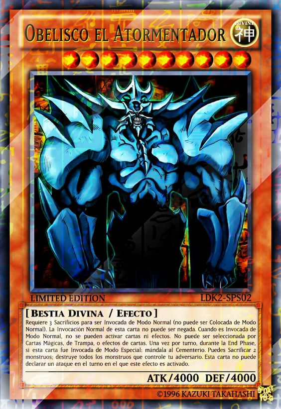

O jovem estudante do ensino médio Yugi Muto derrota o campeão mundial, Seto Kaiba, em um duelo de cartas com a misteriosa ajuda do quebra-cabeça Millenium. Em razão de sua vitória inesperada, Yugi se torna famoso em todo o mundo e passa a participar de outros duelos para salvar os amigos e a família. Enquanto a série avança, Yugi e seus amigos descobrem que esta pessoa dentro de seu enigma é realmente o espírito de um Faraó sem nome dos tempos egípcios que tinha perdido suas memórias. Como Yugi e seus companheiros tentam ajudar o faraó a recuperar suas memórias, eles encontram-se passando por muitas provações enquanto eles apostam suas vidas lutando contra os jogadores que exercem os misteriosos itens do Milênio e o poder sombrio dos Jogos das Sombras. Os primeiros capítulos apresentam uma variedade de jogos diferentes, mas a partir do arco "Reino dos Duelistas" o foco é deslocado para o Monstros de Duelo. Esse jogo é jogado com um sistema de imagem holográfica criado por Seto Kaiba (após sua primeira partida com Yugi). |
|
YUGI MUTOU |
JOEY WHEELER |
TÉA GARDNER |
|
KAIBA |
MEI VALENTINE |
BAKURA |
|
EXODIA |
MAGO NEGRO |
MAGA NEGRA |
|
DRAGÃO BRANCO |

FORÇA ESPELHO |
BURACO NEGRO |
|
SLIFER |
DRAGÃO ALADO DE RÁ |

OBELISCO O TORMENTADOR |